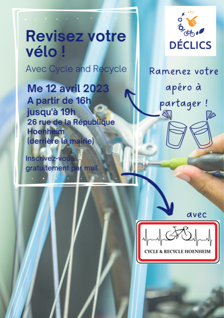

- Cet événement est terminé
Déclics : Réviser votre vélo !
12 avril 2023 à 16 h 00 min - 19 h 00 min
Navigation de l'événement

Venez au rendez-vous incontournable des accros de la pédale !
Que vous soyez féru de vélo ou bien juste admiratif de ceux qui l’utilise tous les jours, venez en parler lors de cet évènement !
Stand de réparation et autres vous attendent !
Date : Mercredi 12 avril 2023
Horaires : de 16h à 19h
Lieu : Chez Cycle & Recycle, 26 rue de la république à HOENHEIM (derrière mairie)
Public : pour toute la famille
Plus d’information : angelique.gouillon@alteralsace.org